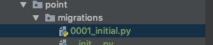
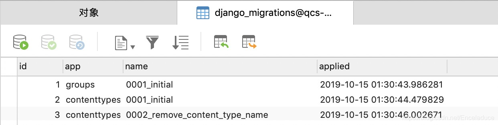

django migrate --fake 与 --fake-initial
Django的migrate 系列命令必须要结合数据库来理解。
migrate命令执行时Django会做4件事：
1，迁移判定，将你的项目中所有未迁移的变动文件进行迁移（django会去查询django_migrations表判断你是否有新的迁移变动）


在完成接下来的迁移后，便会在该表中生成一条迁移记录。
2，迁移映射关系 django_contenttype表新增映射关系（app与模型关系）

3，迁移权限 auth_permission表新增权限

4 ，执行迁移，生成数据表，或变动
migrate --fake 只执行第一步，并生成迁移记录。
migrate --fake-initial 执行前三步，不实际变动数据库
migrate 全部依次执行所有步骤。
python manage.py showmigrations
python manage.py migrate --fake app_name zero
python manage.py migrate --fake app